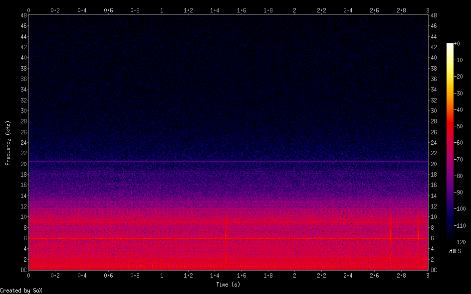
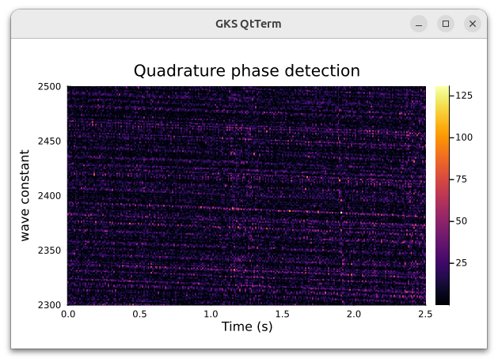

疑似 whistler 波の検出
信号を探しての続き
実際に人工衛星で受信された whistler 波の一部を磁気ピックアップで得られた信号に重ねて同期検波での検出を実験してみます
テスト関数としては exp(2πj * (α/t)) の t = [0.7, 1.2] の部分を使います
αは whistler 波のパラメータで whistler 波の通る経路の長さやプラズマや地磁気の状態できまり、周波数の降下の程度を表しています
実験では α を 2300-2500 の間としました
whistler 波のデータを 0.01倍し磁気ピックアップで得られたノイズ信号と加え3秒のデータを作りました

ノイズに埋もれていますが2秒あたりに典型的な whistler 波があります
このデータを信号とし時間を10msずらしながら0.5秒間同期検波してその値の絶対値の2乗をαを 2300-2500の間で1づつ変化させてヒートマップにしました

t=1.9秒 α=2380 に値が 125 ほどの明るいピーク点があることがわかります
ピックアップで得られるデータの1.5、2.7、2.9秒付近のスペクトルの広いインパルス状ノイズがあるのですがそれがヒートマップの 1.2、2.2、2.5秒辺りの計算結果でのノイズになっていることも見て取れます
この散発的なノイズの由来はわかっていないのですが、これらを計算から取り除くことができればより正確な結果が得られるかもしれません
なおデータ3秒でパラメータαが200通り、0.5秒間同期検波の場合、私の PC では CPU 1スレッドの計算で同期検波時にフィルタ処理なしで2秒程度、フィルタ処理を行うと10数秒掛かっています
こういうのは GPU 向きなようで無印 Jetson nano でさえパラメータで並列化してやると同期検波時のフィルタ処理を行っても計算自体は 0.1秒以下で終了しました